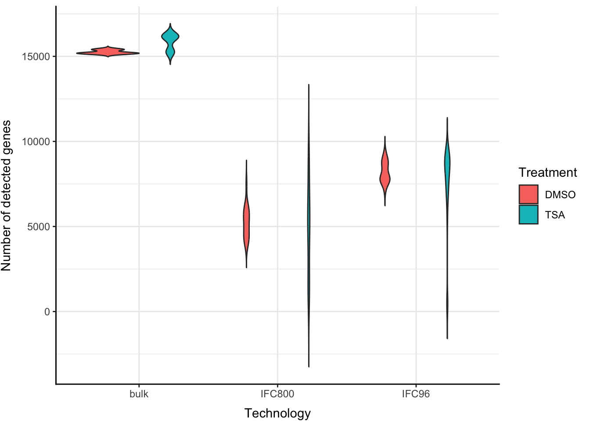
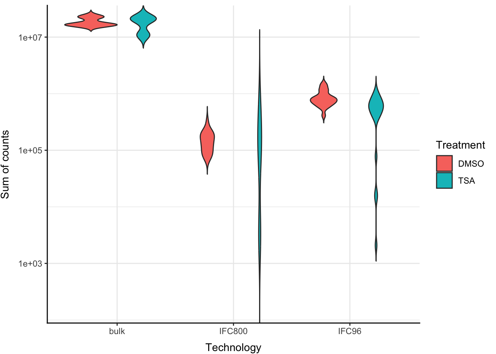
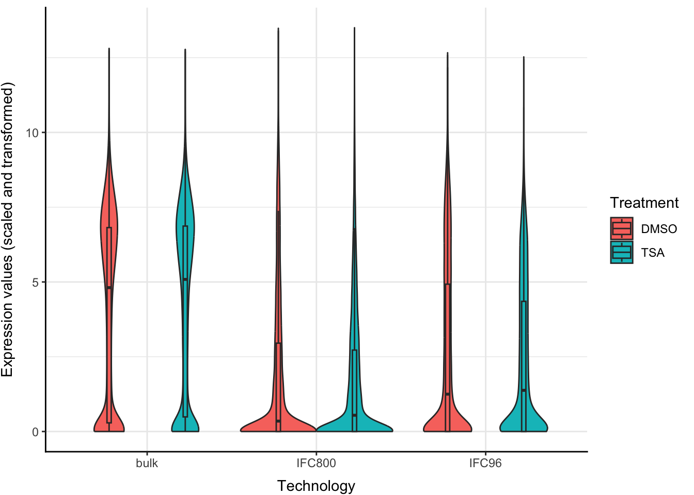
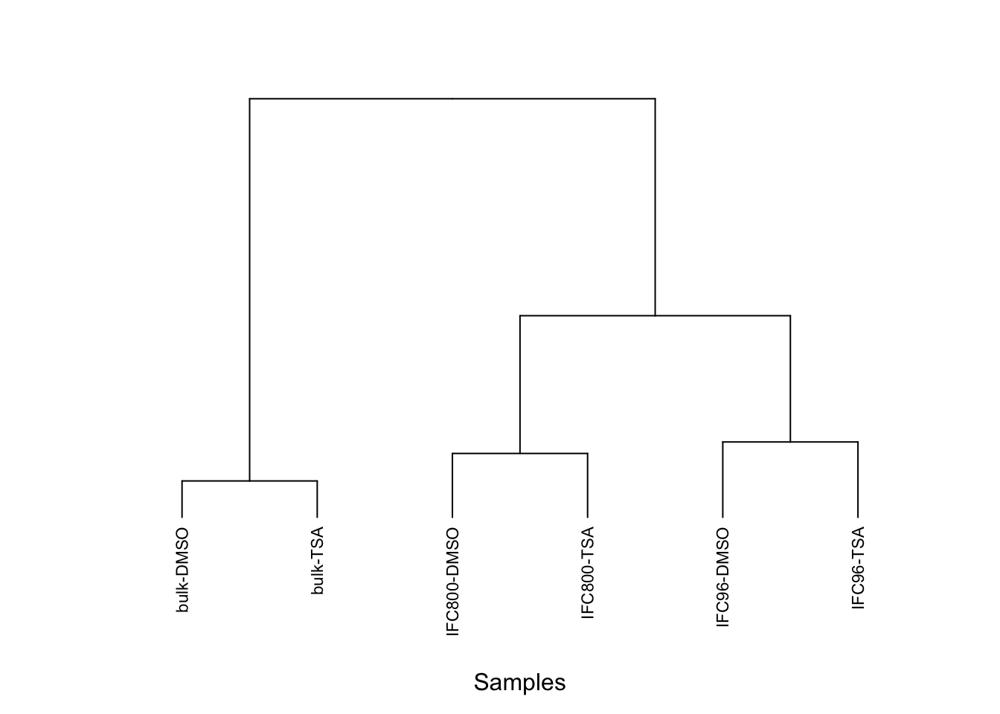
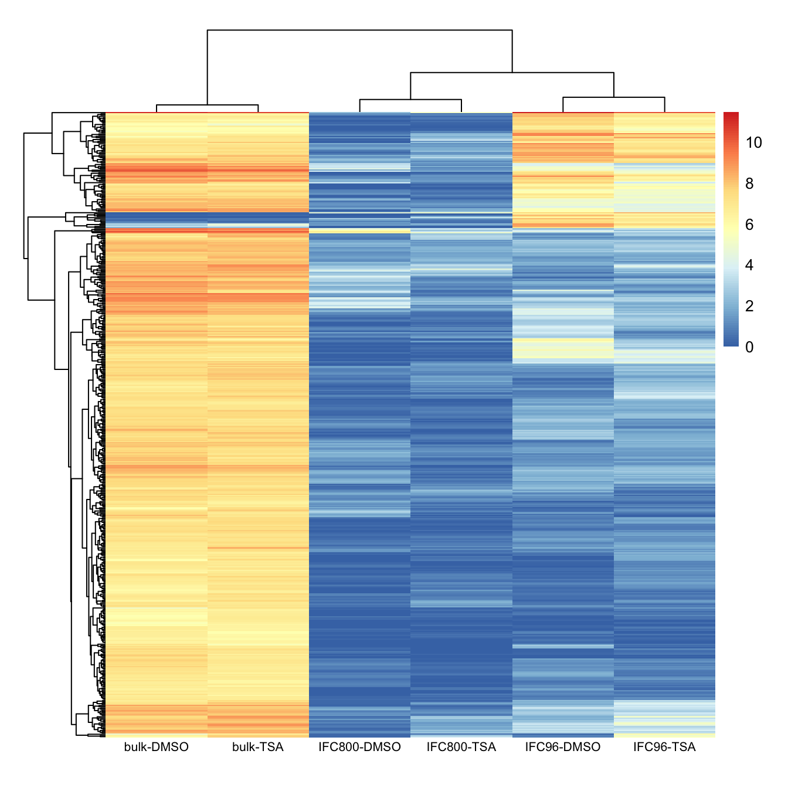

Do an exploratory data analysis of a matrix of expression values. The data consists of expression values for samples that were treated with DMSO and TSA. The samples were measured using three technologies: bulk, IFC96, IFC800. See the two RDS files counts.RDS and phenodata.RDS.
The experiment has two experimental factors “Treatment” and “Technology”. Treatment has two levels, Technology has three levels. Samples that have the same combination of Treatment & Technology are replicates.
Data Import
x =readRDS("counts.RDS")anno =readRDS("phenodata.RDS")head(anno)
Compute and visualize basic statistics on the experimental design
How many replicates are there for each combination of factor levels?
# repls stores number of replicates per samplerepls <-data.frame(matrix(0, length(unique(anno$Treatment)), length(unique(anno$Technology))))rownames(repls) =unique(anno$Treatment)colnames(repls) =unique(anno$Technology)for (i in1:nrow(anno)) { repls[anno$Treatment[i], anno$Technology[i]] <- repls[anno$Treatment[i], anno$Technology[i]] +1}repls
bulk IFC96 IFC800
DMSO 3 20 20
TSA 3 20 20
How many genes have an expression value above 0 in each sample?
# num_genes stores number of expressed genes (expression value > 0) per samplenum_genes <-data.frame(colSums(x !=0))colnames(num_genes) ="num_genes"head(num_genes)
Are there systematic differences between the samples in the different conditions (treatment & technology)? Visualize the following statistics per sample.
Number of detected genes
ggplot(cbind(anno, num_genes), aes(x = Technology, y = num_genes, fill = Treatment)) +geom_violin(trim =FALSE) +labs(x ="Samples", y ="Number of detected genes") +theme_bw() +theme(axis.title.x =element_text(vjust =-1),axis.title.y =element_text(vjust =+3),panel.border =element_blank(),axis.line =element_line(color ="black", linewidth =0.5, lineend ="square") )

The number of detected genes is much higher in the bulk samples as compared to the IFC800 and IFC96 samples. Within the IFC800 and IFC96 samples, the TSA treated samples have a much larger spread as compared to the DMSO treated samples. Also, the mean is slightly higher for the IFC96 samples than the IFC800 samples. However, for each of the 3 technologies, the mean number of detected genes for both treatments is quite similar.
Total sum of counts per sample (serves as a proxy for the number of sequenced reads per sample)
ggplot(cbind(anno, sum_counts), aes(x = Technology, y = sum_counts, fill = Treatment)) +geom_violin(trim =FALSE) +scale_y_continuous(expand =c(0, 0),trans =log10_trans() ) +labs(x ="Samples", y ="Sum of counts") +theme_bw() +theme(axis.title.x =element_text(vjust =-1),axis.title.y =element_text(vjust =+3),panel.border =element_blank(),axis.line =element_line(color ="black", linewidth =0.5, lineend ="square") )

The total sum of counts for the bulk samples is 1-2 orders of magnitude greater than the IFC800 and IFC96 samples. Again, the mean is slightly higher for the IFC96 samples than the IFC800 samples, and for each of the 3 technologies, the total sum of counts for both treatments is quite similar.
Normalize the data
Scale the columns so that the total sum of all columns are identical.
# norm_x scales the columns such that each column sum is equal to the maximum of the column sums of xnorm_x <-sweep(x*max(sum_counts), 2, t(sum_counts), "/")
Transform the data to log-scale
Use the function log1p to transform the data to log-scale.
# log_x transforms the normalized data to log-scalelog_x <-log1p(norm_x)
Visualize the distribution of the expression values
Use violin plots and boxplots to visualize the distribution of the expression values. Aggregate the replicates in the same experimental group into one average sample, and plot the averaged sample. Color by experimental factors.
# aggr_x contains expression data of all genes averaged over replicates for each sampleaggr_x <-data.frame(matrix(0, length(unique(anno$Treatment))*length(unique(anno$Technology)), nrow(log_x)))colnames(aggr_x) =rownames(log_x)cats <-data.frame(Treatment =rep(rownames(repls), length(unique(anno$Technology))), Technology =rep(colnames(repls), each =length(unique(anno$Treatment))))aggr_x <-cbind(cats, aggr_x)for (i in1:nrow(aggr_x)) {aggr_x[i, 3:ncol(aggr_x)] <-rowMeans(log_x[, anno$Treatment == aggr_x$Treatment[i] & anno$Technology == aggr_x$Technology[i]])}# grp_x reshapes aggr_x for easy grouped violin plotgrp_x <-data.frame(matrix(0, nrow(log_x)*nrow(aggr_x), 3))colnames(grp_x) =c(colnames(aggr_x)[1:2], "expr")grp_x$Treatment <-rep(aggr_x$Treatment, nrow(log_x))grp_x$Technology <-rep(aggr_x$Technology, nrow(log_x))grp_x$expr <-c(unname(as.matrix(aggr_x[, 3:ncol(aggr_x)])))
ggplot(grp_x, aes(x = Technology, y = expr, fill = Treatment)) +geom_violin() +geom_boxplot(width = .05, outlier.colour =NA, position =position_dodge(width =0.9)) +labs(x ="Samples", y ="Expression values (scaled and transformed)") +theme_bw() +theme(axis.title.x =element_text(vjust =-1),axis.title.y =element_text(vjust =+3),panel.border =element_blank(),axis.line =element_line(color ="black", linewidth =0.5, lineend ="square") )

For all 3 technologies, the violin plots of the expression values look very similar for both treatments. For IFC800 samples, most expression values are very low, while IFC96 samples have slightly higher expression values. However, most strikingly, bulk samples have a considerably high fraction of higher expression values out of all expression values as compared to the IFC800 and IFC96 samples.
Most variable genes
Identify the 500 most variable genes (with largest variance across samples) and continue working with those.
# expr_vars contains variances in expression across samples for each geneexpr_vars <-as.data.frame(colVars(as.matrix(aggr_x[, 3:ncol(aggr_x)])))colnames(expr_vars) ="expr_variance"# top_vars sorts expr_vars in descending order and stores the 500 most variable genestop_vars <-order(-as.matrix(expr_vars))[1:500]#top_x contains expression data of 500 most variable genestop_x <-cbind(subset(aggr_x, select =c(1,2)), subset(aggr_x, select =2+ top_vars))rownames(top_x) =unname(paste0(top_x$Technology, '-', top_x$Treatment))
Sample correlations
Compute and visualize the sample-to-sample correlations.
# cor_x is obtained from top_x by subtracting mean expression of all genes from each expression value per samplecor_x <-cbind(top_x[, 1:2], mean_expr =rowMeans(top_x[3:ncol(top_x)]), top_x[3:ncol(top_x)])cor_x[, 4:ncol(top_x)] <- cor_x[, 4:ncol(top_x)] - cor_x$mean_expr# correl stores Pearson correlation coefficient between each samplecorrel <-matrix(0, nrow(top_x), nrow(top_x))for (i in1:nrow(top_x)) {for (j in1:i) { numr <-sum(cor_x[i, 4:ncol(top_x)] * cor_x[j, 4:ncol(top_x)]) denr <-sqrt(sum(cor_x[i, 4:ncol(top_x)] ^2) *sum(cor_x[j, 4:ncol(top_x)] ^2)) correl[i,j] <- numr/denr; }}# correl is converted to a symmetric dataframe for visualizationcorrel <-as.data.frame(correl +t(correl) -diag(diag(correl)));colnames(correl) =unname(paste0(top_x$Technology, '-', top_x$Treatment))rownames(correl) =colnames(correl)
For the bulk and IFC96 samples, the expression profiles of the DMSO and TSA treated samples are highly correlated, while the correlation is quite less for the IFC800 samples. There is also a slight positive correlation between IFC800 samples and both bulk and IFC96 samples, and a slight negative correlation between bulk and IFC96 samples.
Clustering
Compute and visualize a hierarchical clustering of the samples, use the method hclust.
# hc_x stores hierarchical clusters of samples calculated using Euclidean distancehc_x <-hclust(dist(top_x[, 3:ncol(top_x)]))
par(mar =c(9, 4.1, 4.1, 2.1), cex =0.7)plot(as.dendrogram(hc_x), ylab ="")mtext(side =1, text ="Samples", line =7)mtext(side =2, text ="Cluster distances", line =3)

Heatmap
Use the package pheatmap to generate a heatmap of the expression data.
# heatmap of normalized and transformed expression values of all genes per sample# genes are also clustered hierarchically based on Euclidean distance between expression values #| label: heatmap#| fig-height: 20pheatmap(t(as.matrix(top_x[, 3:ncol(top_x)])), cluster_rows =hclust(dist(t(top_x[, 3:ncol(top_x)]))), cluster_cols = hc_x, show_rownames =FALSE, show_colnames =TRUE, angle_col =0, cellwidth =65, cellheight =0.8, fontsize_col =8)

The most visually striking observation is that the bulk samples have higher expression values than the IFC800 and IFC96 samples, except for one specific cluster of genes which has low expression, and is expressed relatively more in the IFC96 samples. Expression values for the IFC800 samples are generally low, while those for IFC96 are also mostly low, except for a few clusters of genes which are similar to the bulk samples.
Coming to the effect of treatment, there are very few differences between DMSO and TSA treatment for the bulk samples. For the IFC800 samples, there is one small cluster of genes which has somewhat lower expression in the TSA treatment as compared to the DMSO treatment. For the IFC96 samples, there seem to be a few clusters of genes which have lower expression for the TSA treated samples as compared to the DMSO treated samples, while there is one cluster which has slightly higher expression.
Source Code
---title: "Exercise 03"author: "Dipayan Akhuli"format: html: code-fold: false code-tools: true---```{r setup, include=FALSE}knitr::opts_chunk$set(echo =TRUE)``````{r}#| label: load-packages#| include: falselibrary(ggplot2)library(scales)library(matrixStats)library(reshape2)library(pheatmap)```## Exploratory Data AnalysisDo an exploratory data analysis of a matrix of expression values. The data consists of expression values for samples that were treated with DMSO and TSA. The samples were measured using three technologies: bulk, IFC96, IFC800. See the two RDS files `counts.RDS` and `phenodata.RDS`.The experiment has two experimental factors "Treatment" and "Technology". Treatment has two levels, Technology has three levels. Samples that have the same combination of Treatment & Technology are replicates.## Data Import```{r}x =readRDS("counts.RDS")anno =readRDS("phenodata.RDS")head(anno)```## Compute and visualize basic statistics on the experimental designHow many replicates are there for each combination of factor levels?```{r}# repls stores number of replicates per samplerepls <-data.frame(matrix(0, length(unique(anno$Treatment)), length(unique(anno$Technology))))rownames(repls) =unique(anno$Treatment)colnames(repls) =unique(anno$Technology)for (i in1:nrow(anno)) { repls[anno$Treatment[i], anno$Technology[i]] <- repls[anno$Treatment[i], anno$Technology[i]] +1}repls```How many genes have an expression value above 0 in each sample?```{r}# num_genes stores number of expressed genes (expression value > 0) per samplenum_genes <-data.frame(colSums(x !=0))colnames(num_genes) ="num_genes"head(num_genes)```Are there systematic differences between the samples in the different conditions (treatment & technology)? Visualize the following statistics per sample.### Number of detected genes```{r}#| label: viol-num-genesggplot(cbind(anno, num_genes), aes(x = Technology, y = num_genes, fill = Treatment)) +geom_violin(trim =FALSE) +labs(x ="Samples", y ="Number of detected genes") +theme_bw() +theme(axis.title.x =element_text(vjust =-1),axis.title.y =element_text(vjust =+3),panel.border =element_blank(),axis.line =element_line(color ="black", linewidth =0.5, lineend ="square") )```The number of detected genes is much higher in the bulk samples as compared to the IFC800 and IFC96 samples. Within the IFC800 and IFC96 samples, the TSA treated samples have a much larger spread as compared to the DMSO treated samples. Also, the mean is slightly higher for the IFC96 samples than the IFC800 samples. However, for each of the 3 technologies, the mean number of detected genes for both treatments is quite similar.### Total sum of counts per sample (serves as a proxy for the number of sequenced reads per sample)Color the samples by the experimental condition.```{r}sum_counts <-data.frame(colSums(x))colnames(sum_counts) ="sum_counts"head(sum_counts)``````{r}#| label: viol-sum-countsggplot(cbind(anno, sum_counts), aes(x = Technology, y = sum_counts, fill = Treatment)) +geom_violin(trim =FALSE) +scale_y_continuous(expand =c(0, 0),trans =log10_trans() ) +labs(x ="Samples", y ="Sum of counts") +theme_bw() +theme(axis.title.x =element_text(vjust =-1),axis.title.y =element_text(vjust =+3),panel.border =element_blank(),axis.line =element_line(color ="black", linewidth =0.5, lineend ="square") )```The total sum of counts for the bulk samples is 1-2 orders of magnitude greater than the IFC800 and IFC96 samples. Again, the mean is slightly higher for the IFC96 samples than the IFC800 samples, and for each of the 3 technologies, the total sum of counts for both treatments is quite similar.## Normalize the dataScale the columns so that the total sum of all columns are identical.```{r}# norm_x scales the columns such that each column sum is equal to the maximum of the column sums of xnorm_x <-sweep(x*max(sum_counts), 2, t(sum_counts), "/") ```## Transform the data to log-scaleUse the function `log1p` to transform the data to log-scale.```{r}# log_x transforms the normalized data to log-scalelog_x <-log1p(norm_x)```## Visualize the distribution of the expression valuesUse violin plots and boxplots to visualize the distribution of the expression values. Aggregate the replicates in the same experimental group into one average sample, and plot the averaged sample. Color by experimental factors.```{r}# aggr_x contains expression data of all genes averaged over replicates for each sampleaggr_x <-data.frame(matrix(0, length(unique(anno$Treatment))*length(unique(anno$Technology)), nrow(log_x)))colnames(aggr_x) =rownames(log_x)cats <-data.frame(Treatment =rep(rownames(repls), length(unique(anno$Technology))), Technology =rep(colnames(repls), each =length(unique(anno$Treatment))))aggr_x <-cbind(cats, aggr_x)for (i in1:nrow(aggr_x)) {aggr_x[i, 3:ncol(aggr_x)] <-rowMeans(log_x[, anno$Treatment == aggr_x$Treatment[i] & anno$Technology == aggr_x$Technology[i]])}# grp_x reshapes aggr_x for easy grouped violin plotgrp_x <-data.frame(matrix(0, nrow(log_x)*nrow(aggr_x), 3))colnames(grp_x) =c(colnames(aggr_x)[1:2], "expr")grp_x$Treatment <-rep(aggr_x$Treatment, nrow(log_x))grp_x$Technology <-rep(aggr_x$Technology, nrow(log_x))grp_x$expr <-c(unname(as.matrix(aggr_x[, 3:ncol(aggr_x)])))``````{r}#| label: viol-expr-valsggplot(grp_x, aes(x = Technology, y = expr, fill = Treatment)) +geom_violin() +geom_boxplot(width = .05, outlier.colour =NA, position =position_dodge(width =0.9)) +labs(x ="Samples", y ="Expression values (scaled and transformed)") +theme_bw() +theme(axis.title.x =element_text(vjust =-1),axis.title.y =element_text(vjust =+3),panel.border =element_blank(),axis.line =element_line(color ="black", linewidth =0.5, lineend ="square") )```For all 3 technologies, the violin plots of the expression values look very similar for both treatments. For IFC800 samples, most expression values are very low, while IFC96 samples have slightly higher expression values. However, most strikingly, bulk samples have a considerably high fraction of higher expression values out of all expression values as compared to the IFC800 and IFC96 samples.## Most variable genesIdentify the 500 most variable genes (with largest variance across samples) and continue working with those.```{r}# expr_vars contains variances in expression across samples for each geneexpr_vars <-as.data.frame(colVars(as.matrix(aggr_x[, 3:ncol(aggr_x)])))colnames(expr_vars) ="expr_variance"# top_vars sorts expr_vars in descending order and stores the 500 most variable genestop_vars <-order(-as.matrix(expr_vars))[1:500]#top_x contains expression data of 500 most variable genestop_x <-cbind(subset(aggr_x, select =c(1,2)), subset(aggr_x, select =2+ top_vars))rownames(top_x) =unname(paste0(top_x$Technology, '-', top_x$Treatment))```## Sample correlationsCompute and visualize the sample-to-sample correlations.```{r}# cor_x is obtained from top_x by subtracting mean expression of all genes from each expression value per samplecor_x <-cbind(top_x[, 1:2], mean_expr =rowMeans(top_x[3:ncol(top_x)]), top_x[3:ncol(top_x)])cor_x[, 4:ncol(top_x)] <- cor_x[, 4:ncol(top_x)] - cor_x$mean_expr# correl stores Pearson correlation coefficient between each samplecorrel <-matrix(0, nrow(top_x), nrow(top_x))for (i in1:nrow(top_x)) {for (j in1:i) { numr <-sum(cor_x[i, 4:ncol(top_x)] * cor_x[j, 4:ncol(top_x)]) denr <-sqrt(sum(cor_x[i, 4:ncol(top_x)] ^2) *sum(cor_x[j, 4:ncol(top_x)] ^2)) correl[i,j] <- numr/denr; }}# correl is converted to a symmetric dataframe for visualizationcorrel <-as.data.frame(correl +t(correl) -diag(diag(correl)));colnames(correl) =unname(paste0(top_x$Technology, '-', top_x$Treatment))rownames(correl) =colnames(correl)``````{r}#| label: correl-expr-valsmelted_correl <-melt(cbind(sample =colnames(correl), correl), id.vars ="sample")ggplot(melted_correl, aes(x =factor(sample, level =rownames(correl)), y = variable, fill = value)) +geom_tile(color ="black") +scale_fill_gradient2(low ="blue", high ="red", mid ="white", midpoint =0, limit =c(-1,1), space ="Lab", name="Correlation") +geom_text(aes(variable, sample, label =round(value, 3)), color ="black", size =3) +theme_bw() +theme(legend.text =element_text(size =9),legend.title =element_text(size =11),panel.grid.major =element_blank(),panel.border =element_blank(),panel.background =element_blank(),axis.ticks =element_blank(),axis.title.y =element_blank(),axis.title.x =element_blank(),axis.text.y =element_text(size =9, vjust =1, hjust =1),axis.text.x =element_text(angle =90, size =9, vjust =1, hjust =1)) +coord_fixed()```For the bulk and IFC96 samples, the expression profiles of the DMSO and TSA treated samples are highly correlated, while the correlation is quite less for the IFC800 samples. There is also a slight positive correlation between IFC800 samples and both bulk and IFC96 samples, and a slight negative correlation between bulk and IFC96 samples.## ClusteringCompute and visualize a hierarchical clustering of the samples, use the method `hclust`.```{r}# hc_x stores hierarchical clusters of samples calculated using Euclidean distancehc_x <-hclust(dist(top_x[, 3:ncol(top_x)]))``````{r}#| label: hclustpar(mar =c(9, 4.1, 4.1, 2.1), cex =0.7)plot(as.dendrogram(hc_x), ylab ="")mtext(side =1, text ="Samples", line =7)mtext(side =2, text ="Cluster distances", line =3)```## HeatmapUse the package `pheatmap` to generate a heatmap of the expression data.```{r fig.height=7}# heatmap of normalized and transformed expression values of all genes per sample# genes are also clustered hierarchically based on Euclidean distance between expression values #| label: heatmap#| fig-height: 20pheatmap(t(as.matrix(top_x[, 3:ncol(top_x)])), cluster_rows =hclust(dist(t(top_x[, 3:ncol(top_x)]))), cluster_cols = hc_x, show_rownames =FALSE, show_colnames =TRUE, angle_col =0, cellwidth =65, cellheight =0.8, fontsize_col =8)```The most visually striking observation is that the bulk samples have higher expression values than the IFC800 and IFC96 samples, except for one specific cluster of genes which has low expression, and is expressed relatively more in the IFC96 samples. Expression values for the IFC800 samples are generally low, while those for IFC96 are also mostly low, except for a few clusters of genes which are similar to the bulk samples.Coming to the effect of treatment, there are very few differences between DMSO and TSA treatment for the bulk samples. For the IFC800 samples, there is one small cluster of genes which has somewhat lower expression in the TSA treatment as compared to the DMSO treatment. For the IFC96 samples, there seem to be a few clusters of genes which have lower expression for the TSA treated samples as compared to the DMSO treated samples, while there is one cluster which has slightly higher expression.